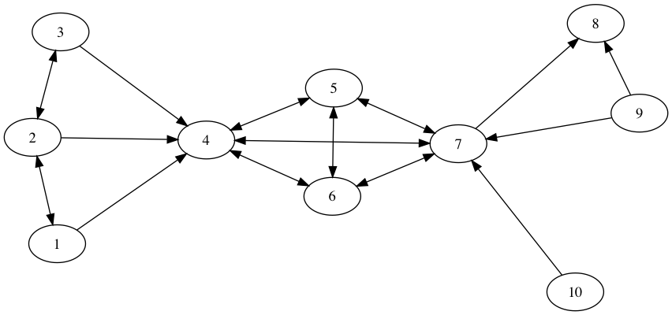

3パターンマッチ指向プログラミング入門
本章は，第2章でみてきたパターンマッチのための構文やさまざまな組み込みパターンを使って，どのようなプログラミングができるのかを解説する． そのために，Egisonパターンマッチを活用したプログラミングにおいて頻出するパターンを紹介していく． 本章でEgisonのパターンマッチを使ったプログラミングの具体的なイメージをつかんでいってもらいたい．
3.1パターンマッチによるリスト・プログラミング
本節は，リスト・プログラミングがEgisonのパターンマッチによってどのように変わるのか観察する． ここでリスト・プログラミングとは，関数型プログラミング言語を含む一般のプログラミング言語のリスト・ライブラリで提供されているような関数を定義するためのプログラミングのことをいう． _ ++ $x :: _という2引数目がコンス・パターンのジョイン・パターンは，リスト・プログラミングにおいて頻出する． そのためこのパターンに名前をつけ，ジョイン・コンス・パターン（join-cons pattern）と呼んでいる． 本節で示すように，リストに対する関数の多くがジョイン・コンス・パターンを使って定義できる．
3.1.1単一のジョイン・コンス・パターン — map関数とその仲間
listマッチャーについて，パターン_ ++ $x :: _は，ターゲットのそれぞれの要素にマッチする． その結果，下記のmatchAll式は，xsのそれぞれの要素にマッチし，それらに関数fを適用した結果を返す． これはまさにmap関数の定義である． 型注釈により，map関数が任意の型aのリストを受け取り，型bのリストを返すことを示している．
def map (f: a -> b) (xs: [a]) : [b] := matchAll xs as list something with
| _ ++ $x :: _ -> f xこのmatchAll式を変更して，さまざまな関数を定義できる． たとえば，filter関数は述語パターンを挿入して定義できる． 型注釈により，述語関数predが型aの値を受け取りBoolを返すことを示している．
def filter (pred: a -> Bool) (xs: [a]) : [a] := matchAll xs as list something with
| _ ++ (?pred & $x) :: _ -> xmember関数は値パターンを挿入することにより定義できる． member関数は第一引数の要素が第二引数のコレクションに含まれているかどうか判定する述語である． member関数は，match式を使って定義する． match式は，car (matchAll ...)carはコレクションの先頭要素を取り出す関数である．のエイリアスとして実装されている． この実装が可能であるのは，EgisonがmatchAll式を遅延評価するためである．
型注釈により，member関数が任意の型aの値とリストを受け取り，Boolを返すことを示している．
def member (x: a) (xs: [a]) : Bool := match xs as list eq with
| _ ++ #x :: _ -> True
| _ -> False}
delete関数は，member関数をすこし編集して実装できる． delete関数は，第一引数xの最初の出現を第二引数のコレクションxsから取り除く．
def delete (x: a) (xs: [a]) : [a] := match xs as list eq with
| $hs ++ #x :: $ts -> hs ++ ts
| _ -> xs}
述語anyとeveryも同様にmatch式により実装できる． anyは第二引数のコレクションの要素のうちに第一引数の述語を満たすものがあるかどうか判定する述語である． everyは第二引数のコレクションの要素のすべてが第一引数の述語を満たすかどうか判定する述語である．
def any (pred: a -> Bool) (xs: [a]) : Bool := match xs as list something with
| _ ++ ?pred :: _ -> True
| _ -> False
def every (pred: a -> Bool) (xs: [a]) : Bool := match xs as list something with
| _ ++ !?pred :: _ -> False
| _ -> True3.1.2ジョイン・コンス・パターンのネスト — unique・concat関数
複数のジョイン・コンス・パターンを組み合わせることで，さらに強力なパターンをつくることができる． その例としてunique関数を紹介する． unique関数をパターンマッチ指向プログラミングにより定義すると以下のようになる． 型注釈により，unique関数が任意の型aのリストを受け取り，同じ型のリストを返すことを示している．
def unique (xs: [a]) : [a] := matchAllDFS xs as list eq with
| _ ++ $x :: !(_ ++ #x :: _) -> xnotパターンが，xがxのあとにそれ以上現れないことを表現するために使われている． その結果このパターンは，それぞれの要素の最後の出現にマッチする．
unique [1,2,3,2,4] -- [1,3,2,4]述語パターンを上手に使って，それぞれの要素の最初の出現からなるコレクションを返すunique関数を定義することも可能である． 最初の出現だけにマッチするために，その要素より前に同じ要素が出現しないときにマッチするパターンを書く必要がある． Egisonのパターンマッチはパターンを左から右に処理するため，そのようなパターンは，コンス・パターンとジョイン・パターンを単純に組み合わせるだけでは書けない．
def unique2 (xs: [a]) : [a] := matchAllDFS xs as list eq with
| $hs ++ (!?(\x -> member x hs) & $x) :: _ -> x
unique2 [1,2,3,2,4] -- [1,2,3,4]もうひとつのもっとエレガントな方法に，シーケンシャル・パターンを使う方法がある． 同じ意味のパターンを，ジョイン・パターンの第一引数に後回しパターン変数を使うシーケンシャル・パターンにより表現できる．
def unique (xs: [a]) : [a] := matchAllDFS xs as list eq with
| {@ ++ $x :: _,
!(_ ++ #x :: _)}
-> xネストしたジョイン・コンス・パターンのもうひとつの例に，第2章2.5節で紹介したconcat関数がある． マッチャー合成（第2章2.10節）とジョイン・コンス・パターンを組み合わせることにより，concatをパターンマッチ指向プログラミングにより定義できる． 型注釈により，concat関数がリストのリストを受け取り，フラット化されたリストを返すことを示している．
def concat (xss: [[a]]) : [a] := matchAllDFS xss as list (list something) with
| _ ++ (_ ++ $x :: _) :: _ -> x3.2多重集合プログラミング
多重集合を直接パターンマッチできることは，Egisonの大きな特徴である． 多重集合のパターンマッチを活かしたプログラミングのコツを本節では紹介したい． これ以降の本書に出てくるパターンマッチはほぼ多重集合のパターンマッチである．
3.2.1多重集合のコンス・パターン
multisetマッチャーのコンス・パターンは，要素の順序を無視してコレクションのパターンマッチをするのに便利である． 数学のアルゴリズムを記述するとき，このような状況はよく現れる．
簡単な例からはじめる． 連想リストに対するlookup関数は，単一のコンス・パターンで定義できる． 単一の多重集合のコンス・パターンは，リストのジョイン・コンス・パターンと置き換えることもできる． 型注釈により，lookup関数がキーkと連想リストを受け取り，対応する値を返すことを示している．
def lookup (k: a) (ls: [(a, b)]) : b := match ls as multiset (eq, something) with
| (#k, $x) :: _ -> xただし，ネストした多重集合のコンス・パターンは，リストのジョイン・コンス・パターンと置き換えることができない． \(k\)重にネストした多重集合のコンス・パターンは\(P(n,k) = \frac{n!}{(n-k)!}\)通りの\(k\)個の要素のパーミュテーションを列挙するために使えるのに対し，\(k\)重にネストしたリストのジョイン・コンス・パターンは\(C(n,k) = \frac{n!}{k!(n-k)!}\)通りの\(k\)個の要素の組み合わせを列挙するために使える．
matchAll [1, 2, 3] as list something with
| _ ++ $x :: _ ++ $y :: _ -> (x, y)
-- [(1,2),(1,3),(2,3)]
matchAll [1, 2, 3] as multiset something with
| $x :: $y :: _ -> (x, y)
-- [(1,2),(1,3),(2,1),(2,3),(3,1),(3,2)]上記と同等なプログラムは，従来の関数型プログラミングの一般的な方法では，リスト内包表記によって以下のように記述できる． tailsは，引数のリストの後方部分からなる部分リストを返す関数である． splitsは，引数のリストを先頭部分のリストと残りのリストに分解したものを返す関数である．
[ (x, y) | x : ts <- tails [1, 2, 3], y <- ts ]
-- [(1,2),(1,3),(2,3)]
[ (x, y) | (hs, x : ts) <- splits [1, 2, 3], y <- hs ++ ts ]
-- [(1,2),(1,3),(2,1),(2,3),(3,1),(3,2)]多重集合のためのライブラリは，従来のプログラミング言語にも用意されているものの，多重集合として扱いたいコレクションをリストとして捉え直す必要がある場面は多い． 実際，上記のリスト内包表記による\(C(n,2)\)個の要素の組み合わせの列挙では，splits関数と++関数という2つのリストを処理するための関数を使っており，対象のコレクションをリストとして捉え直した処理を記述している． 多重集合に対するパターンマッチは，このようなコレクションをリストとして捉え直す処理をパターンの定義（この例の場合，multisetマッチャーの::パターンの定義）に隠すことによって，多重集合として扱いたいコレクションを直接多重集合として扱える機会を広げる． 本書のこれ以降の部分は，多重集合に対するさまざまなパターンを，第2章で紹介したパターンと組み合わせて記述していく．
3.2.2ポーカーの役判定
多重集合に対する非線形パターンの応用例としてポーカーの役判定を紹介する． 多重集合に対する非線形パターンにより，ポーカーのすべての役はそれぞれ1つのパターンとして表現できる． 著者がEgisonのマッチ式を設計したとき，ポーカーの役判定をするプログラムを簡潔に記述できることを必要条件として設計した． “[\(p_1\), \(p_2\), \(...\), \(p_n\)]”というパターンは，“\(p1\) : \(p_2\) : \(...\) : \(p_n\) : []”に展開される糖衣構文である．
def poker (cs: [Card]) : String :=
match cs as multiset card with
| card $s $n :: card #s #(n-1) :: card #s #(n-2) :: card #s #(n-3) :: card #s #(n-4) :: _
-> "Straight flush"
| card _ $n :: card _ #n :: card _ #n :: card _ #n :: _ :: []
-> "Four of a kind"
| card _ $m :: card _ #m :: card _ #m :: card _ $n :: card _ #n :: []
-> "Full house"
| card $s _ :: card #s _ :: card #s _ :: card #s _ :: card #s _ :: []
-> "Flush"
| card _ $n :: card _ #(n-1) :: card _ #(n-2) :: card _ #(n-3) :: card _ #(n-4) :: []
-> "Straight"
| card _ $n :: card _ #n :: card _ #n :: _ :: _ :: []
-> "Three of a kind"
| card _ $m :: card _ #m :: card _ $n :: card _ #n :: _ :: []
-> "Two pair"
| card _ $n :: card _ #n :: _ :: _ :: _ :: []
-> "One pair"
| _ :: _ :: _ :: _ :: _ :: [] -> "Nothing"このpoker関数は以下のように動く．
poker [Card Spade 5, Card Spade 6, Card Spade 7, Card Spade 8, Card Spade 9]
-- "Straight flush"
poker [Card Spade 5, Card Diamond 5, Card Spade 7, Card Club 5, Card Heart 5]
-- "Four of a kind"
poker [Card Spade 5, Card Diamond 5, Card Spade 7, Card Club 5, Card Heart 7]
-- "Full house"
poker [Card Spade 5, Card Spade 6, Card Spade 7, Card Spade 13, Card Spade 9]
-- "Flush"
poker [Card Spade 5, Card Club 6, Card Spade 7, Card Spade 8, Card Spade 9]
-- "Straight"
poker [Card Spade 5, Card Diamond 5, Card Spade 7, Card Club 5, Card Heart 8]
-- "Three of a kind"
poker [Card Spade 5, Card Diamond 10, Card Spade 7, Card Club 5, Card Heart 10]
-- "Two pair"
poker [Card Spade 5, Card Diamond 10, Card Spade 7, Card Club 5, Card Heart 8]
-- "One pair"
poker [Card Spade 5, Card Spade 6, Card Spade 7, Card Spade 8, Card Diamond 11]
-- "Nothing"パターンコンストラクタ（card）は小文字から始まり，データコンストラクタ（Card）は大文字から始まるというルールがEgisonにはある． poker関数の型注釈により，カードのリストを受け取り，役を表す文字列を返すことを示している．
なお，上の例でカードのマッチャーは以下のように代数的データマッチャーとして定義されている．
def suit := algebraicDataMatcher
| spade
| heart
| club
| diamond
def card := algebraicDataMatcher
| card suit (mod 13)3.3タプル・パターンによるデータの比較
複数のデータをくらべたいという場面は，プログラミングにおいて頻出する． このような場面で，とくにnotパターンと一緒に使われるタプル・パターンが役に立つことがおおい． たとえば， difference関数は，第2章2.10節に登場したintersect関数の実装にnotパターンを挿入することにより定義できる． 型注釈により，2つの集合を受け取り，差集合を返すことを示している．
def difference (xs: [a]) (ys: [a]) : [a] := matchAll (xs, ys) as (set eq, set eq) with
| ($x :: _, !(#x :: _)) -> x!($x :: _, #x :: _)のように，notパターンの挿入位置を変えることにより，2つのコレクションに共通要素が1つもない場合にパターンマッチに成功するパターンも記述できる．
これらのパターンをシーケンシャル・パターンと組み合わせることにより，さらに複雑なパターンを記述することができる． シーケンシャル・パターンは，notパターンを，パターンの複数の離れた部分にまとめて適用することを可能にするからである． たとえば，第2章2.8節では，2つのコレクションに共通要素が1つしかないことをチェックするsingleCommonElem関数をパターンマッチにより定義した． シーケンシャル・notパターンは，数学のアルゴリズムを記述するときに必要となることがある． たとえば，第4章4.1節でで紹介するSATソルバーの実装でもシーケンシャル・notパターンは現れる． 型注釈により，2つのリストを受け取り，真偽値を返すことを示している．
def singleCommonElem (xs: [a]) (ys: [a]) : Bool := match (xs, ys) as (multiset eq, multiset eq) with
| [($x :: @, #x :: @),
!($y :: _, #y :: _)] -> True
| _ -> Falseシーケンシャル・パターンをループ・パターンと組み合わせることも可能である． たとえば，2つのリストの共通の先頭部分にマッチするパターンを，シーケンシャル・ループ・パターンにより記述できる．
match (xs, ys) as (list eq, list eq) with
| loop $i (1,$n)
[($x_i :: @, #x_i :: @), [...]]
!($y :: _, #y :: _)
-> map (\i -> x_i) [1..n]3.4ループ・パターンによる再帰的パターン
ループ・パターンは，パターンの繰り返しを表現するために使われる． ループ・パターンは，シンプルなパターンコンストラクタを組み合わせて複雑なパターンを構築したり，パターン変数の数がパラメーターによって変わるパターンを記述するときに役に立つ． そのような状況では，複雑な再帰を記述する必要がてでくる． ループ・パターンを使うと，それらの再帰をパターンに押し込め，直感的な記述ができる． 本節では，そのような例を紹介していく．
3.4.1Nクイーン問題
本節は，Nクイーン問題を解くプログラムをみせることにより，技巧的であるがトリッキーなループ・パターンの例を紹介する． Nクイーン問題とは，\(n \times n\)のチェス盤に\(n\)個のチェスのクイーンの駒をお互いが攻撃しあえないように配置する問題である． チェスのクイーンは，縦横斜め何マス離れている駒でも攻撃することができる． 将棋でいうと，飛車と角行を合わせた動きをチェスのクイーンはできる．
\(4\)クイーン問題をとくプログラムからはじめよう． このプログラムでは，\(4\)つのクイーンの配置をリストで表現する． リストの\(n\)番目の要素は，\(n\)行目のクイーンが何列目の位置にあるかを表現する． このとき，解は，コレクション[1,2,3,4]の要素の順番が並び替わったコレクションである必要がある． \(2\)つのクイーンを同じ行や列に配置できないためである． それゆえ，コレクション[1,2,3,4]を整数の多重集合としてパターンマッチする． クイーン同士が斜めのラインを共有できないという条件は，\(a_1 \pm 1 \neq a_2\)，\(a_1 \pm 2 \neq a_3\)，\(a_2 \pm 1 \neq a_3\)，\(a_1 \pm 3 \neq a_4\)，\(a_2 \pm 2 \neq a_4\)，\(a_3 \pm 1 \neq a_4\)という条件により表現する．
matchAll [1,2,3,4] as multiset integer with
$a_1 ::
(!#(a_1 - 1) & !#(a_1 + 1) & $a_2) ::
(!#(a_1 - 2) & !#(a_1 + 2) & !#(a_2 - 1) & !#(a_2 + 1) & $a_3) ::
(!#(a_1 - 3) & !#(a_1 + 3) & !#(a_2 - 2) & !#(a_2 + 2) & !#(a_3 - 1) & !#(a_3 + 1) & $a_4) ::
[] -> [a_1,a_2,a_3,a_4]
-- [[2,4,1,3],[3,1,4,2]]上記のプログラムを\(n\)クイーン問題のために一般化するには，二重にネストしたループ・パターンを使うことができる． 外側のループ・パターンの添字変数iが，内側のループ・パターン添字範囲にて，内側のループの繰り返し回数の違いを表現するために使われている． また，前の繰り返しパターンで束縛された値，たとえば，$a_jに束縛された値が，#(a_j - (i - j))や#(a_j + (i - j))のように参照されていることにも注意してほしい． このように，添字付きパターン変数の非線形性（パターンの左側で添字付きパターン変数に束縛した値が参照できること）がうまく機能している． 型注釈により，nQueens関数が整数nを受け取り，整数のリストのリストを返すことを示している．
def nQueens (n: Integer) : [[Integer]] :=
matchAll [1..n] as multiset integer with
| $a_1 ::
(loop $i (2,n)
((loop $j (1, i - 1)
(!#(a_j - (i - j)) & !#(a_j + (i - j)) & ...)
$a_i) :: ...)
[] -> map (\i -> a_i) [1..n]
nQueens 4 -- [[2,4,1,3],[3,1,4,2]]3.4.2ツリーのパターンマッチ
本節は，ツリーのパターンマッチをみせることにより，ループ・パターンの実例を紹介する． 本節のツリーのノードは，XMLのように任意の個数の部分ツリーを子供としてもつ． また，これらのサブツリーは多重集合として扱われる． このようなツリーに対するマッチャーは第2章2.10節にて定義した． このマッチャーを本節では使う．
プログラミング言語をカテゴリー分けしたツリーにたいしてパターンを書く． treeDataがそのカテゴリーツリーを定義している． たとえば，"Egison"は，"pattern-match-oriented"（パターンマッチ指向）カテゴリーと，"Functional programming"（関数型プログラミング）カテゴリーの"Dynamically typed"（動的型付け）サブカテゴリーに属している． データコンストラクタNodeとLeafは大文字から始まる．
def treeData :=
Node "Programming language"
[Node "pattern-match-oriented" [Leaf "Egison"],
Node "Functional language"
[Node "Strictly typed" [Leaf "OCaml", Leaf "Haskell", Leaf "Curry", Leaf "Coq"],
Node "Dynamically typed" [Leaf "Egison", Leaf "Lisp", Leaf "Scheme", Leaf "Racket"]],
Node "Logic programming" [Leaf "Prolog", Leaf "Curry"],
Node "Object oriented" [Leaf "C++", Leaf "Java", Leaf "Ruby", Leaf "Python", Leaf "OCaml"]]下記のmatchAll式は，ある言語が属するカテゴリーを列挙する． ツリーの末端は任意の深さでありうるため，添字範囲の終了値がパターン（下記の場合$n）であるループ・パターンが使われている． このループ・パターンの三点リーダーパターンは，繰り返しパターンの末尾でない場所に位置している． 繰り返しの場所をユーザーが指定できることも，正規表現のクリーネスター演算子にはないループ・パターンの強みのひとつである． パターンコンストラクタnodeとleafは小文字から始まる． 型注釈により，ancestors関数が文字列xとツリーtを受け取り，祖先ノードのパスのリストを返すことを示している．
def ancestors (x: String) (t: Tree String) : [[String]] := matchAll t as tree string with
| loop $i (1,$n)
(node $c_i (... :: _))
(leaf #x)
-> map (\i -> c_i) [1..n]
ancestors "Egison" treeData
-- [["Programming language", "pattern-match-oriented"], ["Programming language", "Functional language", "Dynamically typed"]]あるサブカテゴリーに属する言語をすべて列挙するようなパターンを記述することも可能である． 二重にネストしたループ・パターンを使えば，そのサブカテゴリーが任意の深さにあってもよいようにできる． 以下のパターンは，特定のカテゴリーに属するすべての言語を列挙する． ツリーのなかで現れる順番と同じ順番で言語を列挙するために，matchAllDFSが使われている． 型注釈により，descendants関数が文字列xとツリーtを受け取り，子孫ノードのリストを返すことを示している．
def descendants (x: String) (t: Tree String) : [String] := matchAllDFS t as tree string with
| loop _ (1,_)
(node _ (... :: _))
(node #x ((loop _ (1,_)
(node _ (... :: _))
(leaf $y)) :: _))
-> y
descendants "Functional language" treeData
-- ["OCaml", "Haskell", "Curry", "Coq", "Egison", "Lisp", "Scheme", "Racket"]ツリーのパターンマッチができるDSL（domain-specific language）としては，XML pathがある． ユーザー定義可能な数少ないパターンコンストラクタとループ・パターンを組み合わせて幅広いパターンを記述できることがEgisonの利点である． XML pathは，たとえばancestorコマンドなど，多くの組み込みコマンドを使ってパターンを記述する．
3.4.3グラフのパターンマッチ
本節では，グラフに対するパターンマッチを紹介する． 辺の集合として表現したグラフと，隣接リストとして表現したグラフの両方についてのパターンマッチを紹介する．
辺の集合としてのグラフ
本節は，辺の集合として表現したグラフに対してパターンマッチをおこなう． まず，以下のようなマッチャーとグラフを定義する．
def graph := set edge
def edge := algebraicDataMatcher
| edge integer integer
def graphData :=
[ Edge 1 2, Edge 2 1, Edge 2 3, Edge 2 4, Edge 3 4, Edge 4 5, Edge 4 6, Edge 4 7
, Edge 5 4, Edge 5 6, Edge 5 7, Edge 6 4, Edge 6 5, Edge 6 7, Edge 7 4, Edge 7 5
, Edge 7 6, Edge 7 8, Edge 9 10, Edge 10 7 ]
graphDataの描画
パターンコンストラクタedgeは小文字から始まり，データコンストラクタEdgeは大文字から始まっている． 図3.4.3は，上記のグラフを描画している． 本節は，このグラフに対していくつかのパターンマッチを紹介する．
あるノードsから2辺でたどり着けるノードを列挙するパターンは以下のように書ける．
let s := 1 in
matchAll graphData as graph with
| edge (#s & $x_1) $x_2 :: edge #x_2 $x_3 :: _
-> x
-- [1,3,4,5,6,7]ノードsを始点とする辺でノードsとつながっているが，自身を始点とする辺がノードsに対してでていないノードを列挙するパターンはnotパターンを使って以下のように書ける．
let s := 1 in
matchAll graphData as graph with
| edge #s $x :: !(edge #x #s :: _)
-> x
-- [4]ノードsからノードeへのパスすべてを列挙するパターンはループ・パターンを使って記述できる． Egisonは，パターン中でlet式を使うことを許している． このlet式は，$x_1にsを束縛するために使われている． このlet式のおかげで，ループ・パターンの最初の繰り返しパターンを特別扱いする必要がなくなっている．
let (s, e) := (1, 8) in
matchAll graphData as graph with
| let x_1 := s in
loop $i (2, $n)
(edge #x_(i - 1) $x_i :: ...)
(edge #x_(n - 1) (#e & $x_n) :: _)
-> map (\i -> x_i) [1..n]
-- [[1,4,7,8], ...]サイズ\(n\)のクリーク（完全グラフになっている部分グラフ）を列挙するパターンは以下のように書ける． 二重にネストしたループ・パターンを使う．
let n := 4 in
matchAll graphData2 as graph with
| edge $x_1 $x_2 :: loop $i (3, n)
(edge #x_1 $x_i :: loop $j (2, i - 1)
(edge #x_j #x_i :: ...)
...)
_
-> map (\i -> x_i) [1..n]
-- [[4,5,6,7],...]本節は，有向グラフのパターンマッチを紹介した． 上記の有向グラフに対するパターンを無向グラフに対するパターンに変更することは簡単で，Edge a bとEdge b aを同一視するようなマッチャーを使えばよい． そのような無向グラフに対するマッチャーは，第6章6.2節で紹介するunordered pairに対するマッチャーを使えば定義できる．
隣接グラフ
本節は，重み付き隣接リストにより表現したグラフのパターンマッチをおこなう． 重み付き隣接リストに対するマッチャーは，マッチャー合成（第2章2.10節）により定義できる． 下記のプログラム中のgraphDataは隣接リストにより空路による都市間のネットワークを重み付き隣接リストにより表現している． 2つの都市間の移動にかかる時間が，重みとして整数により表現されている．
def graph := multiset (string, multiset (string, integer))
def graphData :=
[("Berlin", [("New York", 14), ("London", 2), ("Tokyo", 14), ("Vancouver", 13)]),
("New York", [("Berlin", 14), ("London", 12), ("Tokyo", 18), ("Vancouver", 6)]),
("London", [("Berlin", 2), ("New York", 12), ("Tokyo", 15), ("Vancouver", 10)]),
("Tokyo", [("Berlin", 14), ("New York", 18), ("London", 15), ("Vancouver", 12)]),
("Vancouver", [("Berlin", 13), ("New York", 6), ("London", 10), ("Tokyo", 12)])]以下のプログラム中のパターンは，ベルリンを出発して，すべての都市をまわって，ベルリンに戻るルートにマッチする． このパターンを使って，巡回セールスマン問題を解いている． 非線形ループ・パターンを効果的に使っている． 型注釈により，trips関数がグラフデータから経路のリストを計算し，総距離と都市のリストのタプルのリストを返すことを示している．
def trips : [(Integer, [String])] :=
let n := length graphData in
matchAll graphData as graph with
| (#"Berlin", (($s_1,$p_1) :: _)) ::
loop $i (2, n - 1)
((#s_(i - 1), ($s_i, $p_i) :: _) :: ...)
((#s_(n - 1), (#"Berlin" & $s_n, $p_n) :: _) :: [])
-> (sum (map (\i -> p_i) [1..n]), map (\i -> s_i) [1..n])
head (sortBy (\(_, x), (_, y) -> compare x y) trips)
-- (46, ["London", "New York", "Vancouver", "Tokyo", "Berlin"])ツリー（3.4.2節）と同様に，グラフに対するパターンマッチのためのDSLがいくつかグラフ・データベースに対するクエリー言語として開発されている． いくつかのユーザー定義パターン・コンストラクタと，ループ・パターンをはじめとする少数の組み込みパターンを組み合わせて多様なパターンを表現できることが，EgisonのこれらのDSLにたいする利点である．